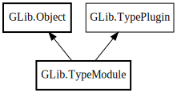

TypeModule
Object Hierarchy:

Description:
[
CCode ( lower_case_csuffix =
"type_module" , type_id =
"g_type_module_get_type ()" ) ]
public abstract class TypeModule :
Object,
TypePlugin
Content:
Creation methods:
Methods:
Inherited Members:
All known members inherited from class GLib.Object
All known members inherited from interface GLib.TypePlugin